Examples¶
ChainConsumer can, at this point in time, do three distinct, useful tasks. The primary one is to create the likelihood surfaces and marginalised distributions that should be familiar. ChainConsumer can also plot the chains as walks to check convergence and mixing. Finally, ChainConsumer can also output LaTeX ready tables of parameter summaries that can be copied and pasted directly into a TeX document.
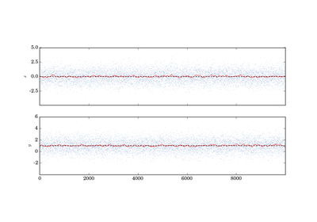
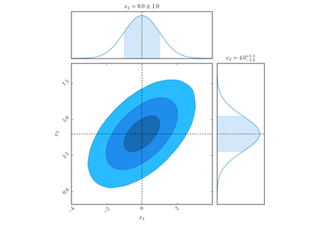

Basic Usages¶
Things like how to load data and how to use the primary functions of the plotting library.
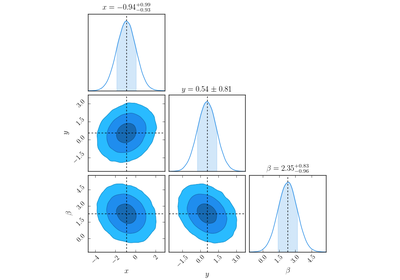

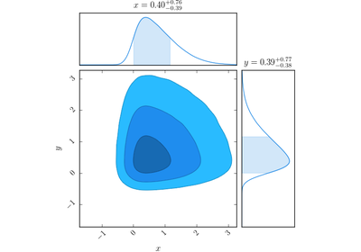
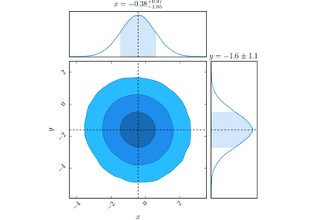
Customisations¶
Here I have included some basic examples showing the different output you can get with ChainConsumer.
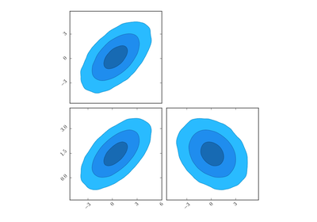
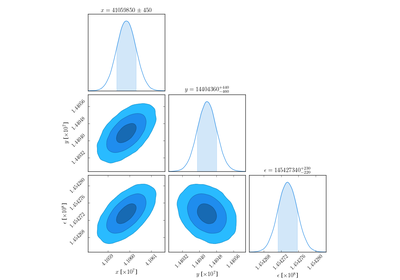
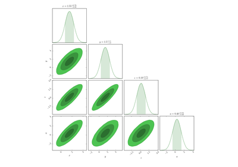
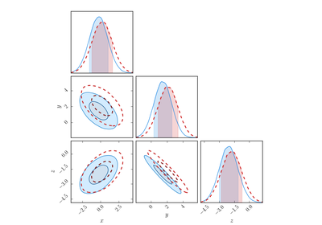
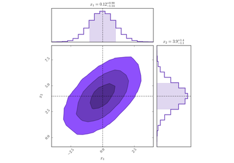
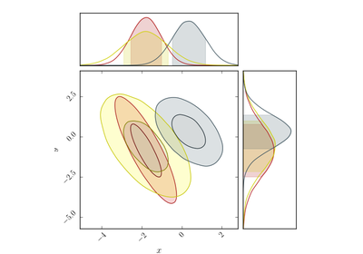
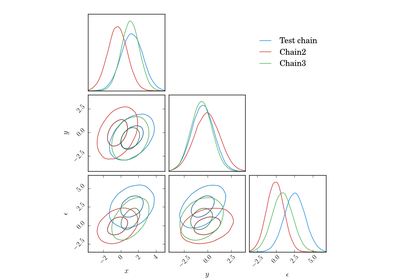
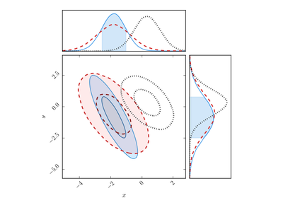